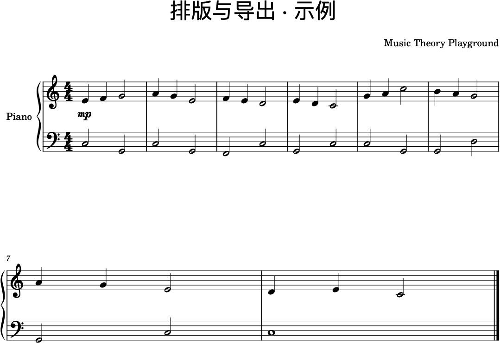

第 32 节 · 排版与导出
让别人看得舒服
一份谱子写对了，只完成了一半。另一半是： 别人拿到它的时候，能不能一眼看懂你要什么。
这就是排版——它不改音乐，只改"读谱的人有多费劲"。
一 · 一张谱子分三层，别混着改
第一层：音符。音高、时值、小节。这是音乐本身，改一次就是改一次音乐。
第二层：记号。连线、力度、速度、反复。这是"怎么说"。
第三层：页面。纸张、边距、行距、字号、系统（一行有几小节）。 这是"看起来如何"。
排版只在第三层动手，而且要整层一起改——最忌讳的是一个个手动去拖音符的位置： 下次改一个音，全乱。
二 · 页面设置：先定纸，再谈别的
菜单格式 → 页面设置。这里面只有三样东西值得管：
纸张大小。要打印就用 A4；只想在屏幕上给人看，宽一点（比如 A4 横向）会更好读。
边距。上边距要给标题留位置，左右边距别小于 12 毫米——装订和打印都可能吃掉一点。
缩放比例。这是最容易见效的一个数字：曲子短了显得空、长了挤成一团， 调它比调任何别的都快。把它调到"整首刚好排满一页"，就是业余和专业的分界线。
三 · 用样式，不要一个元素一个元素地改
菜单格式 → 样式。这里改的是全局：正文文字多大、力度记号多大、 谱表之间隔多远、系统（一行）之间隔多远、行首缩进多少。
为什么必须用样式？因为一份谱子里有几百个小元素， 你不可能一个个对齐。样式是"一并改"，属性面板是"单独改"—— 先想清楚这次要改的是全体还是特例，再决定去哪个面板。
四 · 行与小节的分配：排版的真功夫
一份谱子好不好看，八成取决于一件事：每行多少小节、最后一行是不是只剩一小节。
下面是同一份曲子排好以后的样子。注意它是一行一行均匀铺开的， 两行之间留出了足够的呼吸，标题和作者各就各位：

几个具体动作：
最后一小节不许落单。如果最后一行只剩一小节，就回到小节的属性里 把倒数第二行"减少小节数"，或者干脆把整首的缩放调小一点。
行的间距。在样式里调"系统间距"。行太挤，读谱的人会漏行；太松，翻页变多。
换行不要换在半句中间。如果一句话被行尾劈开，宁可让这一行少排一小节。 音乐的分句优先于纸面的整齐。
想强制换行就在那一小节上按回车（或右键 → 换行）， 想取消就再按一次。
五 · 标题、作者、页码
菜单文件 → 乐谱属性里填：标题、副标题、作曲者、作词者、版权。 填完它们会自动出现在谱面该在的位置，不用手动加文本框。
页眉页脚和页码在样式里设置。给别人的谱子至少要有一个标题和页码—— 散页混在一起的时候，页码是唯一能救命的记号。
六 · 导出：不同用途给不同的文件
菜单文件 → 导出。选错格式是初学者最常见的时间浪费：
| 格式 | 用来干什么 | 注意 |
|---|---|---|
| .mscz | 自己的工作文件，以后还要继续改 | 不是给别人看的东西，别人打开会看到你的全部草稿痕迹 |
| 打印、发给别人、投稿 | 格式固定，谁都打不开改，所以最后一步才导它 | |
| PNG / JPG | 贴到聊天窗、文档、网页里 | 位图，放大会虚。要清晰就调高导出分辨率（150–300 dpi） |
| SVG | 放进网页或排版软件 | 矢量，放大不糊；本站的谱例图就是这一类思路 |
| MusicXML | 给别的打谱软件读（Sibelius、Finale、Dorico…） | 通用交换格式，音乐信息都在，排版信息会丢 |
| MIDI | 丢给 DAW 继续做编曲 | 只有音高、时值、力度这类可计算信息，记号基本丢失 |
| MP3 / WAV | 给人听demo | 默认音源是合成器，别指望用它做正式成品 |
一句话记住：改的时候用 .mscz，看的时候用 PDF， 换软件的时候用 MusicXML，做音乐的时候用 MIDI。
七 · 交付前的检查清单
一 ·每一小节都装满了吗？最后一小节对不对？
二 ·调号、拍号、速度记号都在，而且只在开头写一次（中途变了才再写）。
三 ·力度记号有没有覆盖到全曲？还是只在开头写了一个就没了？
四 ·连音线和延音线有没有用混？跨小节的音有没有用延音线接好？
五 ·最后一页是不是只剩一两行？能不能挤进上一页，或者调小缩放？
六 ·导出的 PDF 打印出来会不会太小？用一个真实字体大小在纸上试一次。
七 ·找一个人（最好是会看谱的）翻一遍，问他"哪里看不懂"。他指的地方就是你要改的地方。
八 · 练习
一 ·把第 31 节那份谱子排成"正好一页"：调缩放、调边距， 目标是最后一页没有单独一行。
二 ·把标题、副标题、作曲者、版权都填上，导出 PDF，打印一张。
三 ·导出 MusicXML，用别的软件（或者再开一个 MuseScore 窗口）打开， 看哪些信息还在、哪些没了。做过一次这个实验，你对"格式"的理解会永久改变。
四 ·把同一份谱子导出成 150 dpi 和 300 dpi 的 PNG，比较文件大小和清晰度。 本站的原则是"静态站要快"，所以图片一定是在"够看"的前提下尽量小——你以后也会有同样的取舍。
九 · 参考
资料
MuseScore 官方手册（中文）
——"格式"一章里有版面、样式、页面设置的完整说明
File management（保存、导出与格式） ·
新版手册 handbook.musescore.org
本站的谱例图全部是用 MuseScore 的命令行渲染出来的：
写好 MusicXML 以后，让 MuseScore 直接输出图片，比在界面里截图干净得多，
也不用担心别人电脑上缺字体。
示例谱在
assets/musescore/32-layout.musicxml。
一句话带走
排版不是为了好看，是为了少让人误会。 读谱的人看不懂你要什么，你的音乐在他脑子里就变成了另一首曲子。